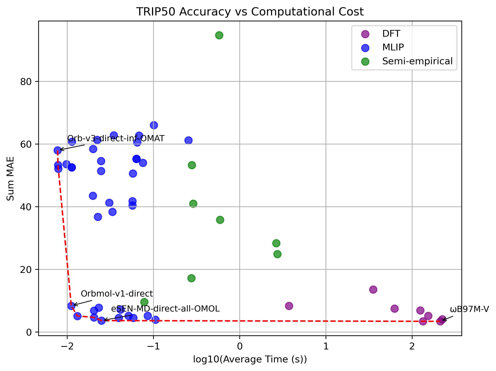
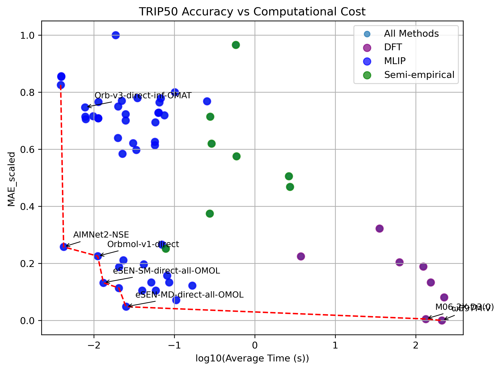

This project serves to evaluate the accuracy and efficiency of several semi-empirical and Machine Learning Interatomic Potential (MLIP) models when predicting reaction energies on triplet-state reaction thermochemistry using the TRIP50 benchmark dataset.
Recent developments in triplet-state organic chemistry have increased the need for accurate computational methods for describing reaction energies. Due to their short lifetime, mechanistic studies on open-shell triplet species rely highly on computation. In the original TRIP-50 study, benchmarking was established using a variety of density functional theory (DFT) methods.[1] A test set of 50 organic reactions was used to compute barrier heights and thermodynamic values using 45 functionals. It was found that range-separated hybrid functionals outperformed non-range-separated versions, and the best-performing single hybrid functionals were ωM06-D3, ωB97M-V, M06-2X-D3, and M05-2X-D3 for a balance of high accuracy and computational efficiency. [2][3][4][5]
While DFT methods provide accurate prediction, their computation expense limits their application to large-scale and high-throughput studies. In this project, I'm expanding on the original TRIP50 benchmarking by evaluating a variety of semi-empirical and MLIP models. To begin,I selected the highest performing from each category of functional as tested in the original benchmarking. Then, I benchmarked using the models listed in the "models tested" section.
DLPNO-CCSD(T)/CBS
Used as the benchmark for all reported errors.
8 methods
All using def2-QZVPP basis set
8 methods
46 methods
| Method | Type | MAE Thermo | MAE Kinetics | Sum MAE | Average Time (s) | Efficiency Score |
|---|
The manner of calculation for the efficiency score is somewhat arbitrary. To make a score that is somewhat representative of both time and accuracy, while taking into account the relative magnitudes obtained values, a weighted score was calculated. First, times were normalized as
$$t'=log_{10}(t+1).$$
Then, time scores and accuracy scores were calculated as
$$\text{Time Score}_{model} = 1 - \displaystyle\left(\frac{t'_{model}-t'_{min}}{t'_{max}-t'_{min}}\right) \hspace{10mm} \text{Accuracy Score}_{model} = 1 - \displaystyle\left(\frac{MAE_{model}-MAE_{min}}{MAE_{max}-MAE_{min}}\right).$$
Finally, these were weighted as
$$\text{Efficiency Score} = 0.8\cdot(\text{Accuracy Score}) + 0.2\cdot(\text{Time Score})$$
to give a final weighted score. These weights were chosen to give more importance to accuracy while still considering time as a factor.


The figure on the left shows a pareto front just using MAEthermo + MAEkinetics. The figure on the right scales the data as
$MAE_{\text{scaled}}=\sqrt{\displaystyle\frac{MAE_{\text{sum}}-MAE_{\text{sum, min}}}{MAE_{\text{sum, max}}-MAE_{\text{sum, min}}}},$
as to show more detail for lower MAEs.
Initial benchmarking results are being collected. Results are being checked for errors, and calculations are being rerun and collected as needed.
| Type | Family | Method Name | Reference |
|---|---|---|---|
| DFT | Double-Hybrid | B2GP-PLYP-D4 | [6] |
| DFT | Hybrid Meta-GGA | M06-D4 | [7] |
| DFT | Meta-GGA | B97M-V | [8] |
| DFT | Range-separated Hybrid | ωB97M-V | [3] |
| DFT | Hybrid GGA | ωB3PW91-D4 | [9] |
| DFT | Hybrid-Meta GGA | M06-2X-D3(0) | [7] |
| DFT | GGA | OLYP-D3(BJ) | [10] [11] [12] |
| DFT | Hybrid-Meta GGA | r2SCAN-3c | [13] |
| Semi-Empirical | TB approximation | g-xTB | [14] |
| Semi-Empirical | TB approximation | GFN0-xTB | [15] |
| Semi-Empirical | TB approximation | GFN-xTB | [16] |
| Semi-Empirical | TB approximation | GFN2-xTB | [17] |
| Semi-Empirical | FF approximation | GFN-FF | [18] |
| Semi-Empirical | NDDO | AM1 | [19] |